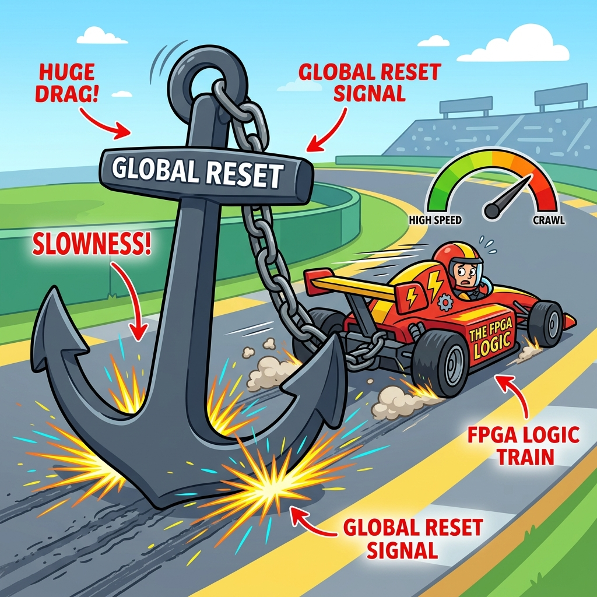
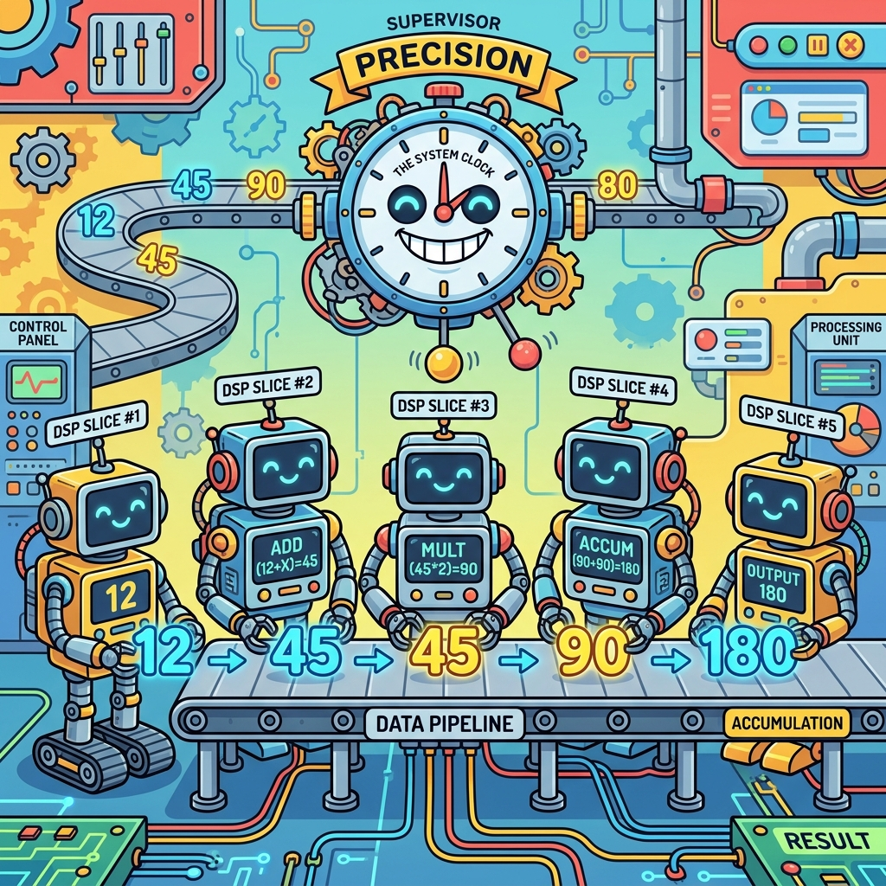

Section 3.1: RTL Coding for Synthesis: Working with the Silicon, Not Against It
Many FPGA engineers think they are writing software. They treat Verilog or VHDL like C++ or Python. They write massive always blocks with nested if-else statements and hope the tools can figure it out. This is a recipe for a design that is slow, power-hungry, and impossible to route.
In the AMD UltraFast Methodology, we don't just "write code." We describe hardware. Every line of HDL you write is a direct instruction for how to arrange transistors, wires, and lookup tables. If you want to build a high-performance system, you have to write code that the synthesis engine can easily map to the physical resources of the FPGA.
Inference vs. Instantiation: The Art of Letting Go
Inference is when you write generic HDL and let Vivado "infer" what hardware to use. For example, if you write a + b, Vivado will infer an adder. Instantiation is when you manually pull a specific component from the AMD library (like a DSP48E2) and wire it up yourself.
The rule of thumb is: Always infer, unless you can't. Inference makes your code portable and easier to read. Modern synthesis tools are incredibly good at recognizing patterns. However, if you need a very specific feature of a DSP block or a high-speed transceiver that the tools aren't picking up, then it’s time to instantiate.
Brain Power If you write a 32-bit multiplier in pure Verilog, will Vivado map it to a DSP slice or a massive pile of LUTs? What coding style (e.g., pipelining) is required to ensure it maps to the high-speed DSP hardware?
The Reset Trap: Less is More
One of the biggest performance killers in FPGA design is the Global Reset. Many engineers reset every single flip-flop in their design. This sounds safe, but it’s actually a disaster for routing. A global reset is a massive high-fanout signal that has to reach every corner of the chip at the exact same time.
In an AMD FPGA, many resources (like SRL16s and some DSP modes) don't even have a reset. If you force a reset on them, Vivado has to use extra LUTs and routing to emulate it, which slows down your design and uses more power. The UltraFast methodology recommends: Reset only what is absolutely necessary (like state machines and control registers). Let your data path be "uninitialized" at startup—the hardware will handle it.

Fireside Chat: The Coder and the Synthesis Engine
Coder: "Look at this beautiful 64-bit nested if-else tree! It handles every possible edge case in one clock cycle. I'm a genius."
Synthesis Engine: "A genius? Do you have any idea how many levels of logic that creates? You’re asking for a path that is 50 LUTs deep. Our clock is 300MHz. I literally cannot build this."
Coder: "But it's just logic! Just find a faster way to route it."
Synthesis Engine: "I'm a tool, not a magician. If you want this to work, you need to pipeline it. Break that 64-bit tree into four stages of 16-bit logic. Give me some registers to work with, and I’ll give you a design that actually meets timing."
Control Signal Overload: The Enable Bottleneck
Just like resets, Clock Enables (CE) can be a bottleneck. If every flip-flop has a unique enable signal, the routing engine becomes congested. Vivado tries to group flip-flops with the same control signals into a single "slice." If your code has a chaotic mix of resets and enables, the tools can't pack the slices efficiently.
Try to group your logic into "Control Sets." If twenty flip-flops share the same reset and the same enable, they can be packed tightly together. If they don't, they’ll be scattered across the die like autumn leaves, leading to longer wires and worse timing.
DSP Mapping: Doing Math at the Speed of Light
AMD FPGAs have dedicated DSP slices that can do high-speed multiplication, addition, and even some logic operations. But to use them, your code has to follow a specific pattern. Specifically, DSP slices are designed to be highly pipelined.
If you write result <= a * b + c, but you don't put registers between the multiplier and the adder, Vivado might not be able to use the dedicated "Internal Feedback" paths of the DSP slice. To get the best performance, always add at least two or three stages of registers to any complex math operation. This allows the tools to "absorb" those registers into the DSP hardware itself.

Code Detective: The Blocking vs. Non-Blocking Mix-up
Mixing blocking (=) and non-blocking (<=) assignments in the same always block is a classic "newbie" mistake that leads to simulation-synthesis mismatches.
// Code Detective: Why is this counter dangerous?
always @(posedge clk) begin
count = count + 1;
if (count == 10) begin
done <= 1'b1;
count = 0;
end
end
// Hint: What happens if 'done' is used elsewhere in the design?
The flaw here is the use of blocking assignments (=) inside a sequential block. This can create "race conditions" where the value of count depends on the order in which the simulator evaluates the lines. In synthesis, this might result in unintended combinational loops or incorrect register behavior.
Be precise about the bug, because "blocking is bad" is not the lesson. Here, count = count + 1
updates count immediately, so the if (count == 10) on the next line tests the
new value while done <= 1'b1 schedules its update for the end of the timestep. The
two assignments therefore refer to different moments. Synthesis resolves this one way,
and another simulator's event ordering may resolve it another — which is exactly the
simulation/synthesis mismatch that costs a lab week.
The fix:
// Corrected: one assignment style, one moment in time, explicit reset.
always @(posedge clk) begin
if (!rst_n) begin
count <= 4'd0;
done <= 1'b0;
end else begin
done <= 1'b0; // default: pulse is one cycle wide
if (count == 4'd10) begin
count <= 4'd0;
done <= 1'b1;
end else begin
count <= count + 1'b1;
end
end
end
Every right-hand side now reads the value the registers held at the clock edge, which is what the hardware does. The rule, stated so it is actually usable:
<=in everyalways @(posedge clk)block. No exceptions worth the risk.=in everyalways @(*)block. Combinational logic is evaluated in order.- Never both in one block, and never assign the same signal from two blocks.
In SystemVerilog, use always_ff and always_comb instead of bare always. They are not
cosmetic: the compiler will reject a blocking assignment in an always_ff, so the whole
class of bug becomes a compile error rather than a lab session.
BRAM and FIFO Inference: Memory that Fits
When you need to store data, you want to use Block RAM (BRAM) or UltraRAM (URAM). If you write a large array in your HDL, Vivado will try to infer a BRAM. But if you add a reset to that array, or if you try to read two different locations in the same clock cycle, Vivado will give up and use thousands of flip-flops instead.
Check the AMD HDL coding templates! They show the exact structure required for BRAM inference. Usually, it’s a simple array with a specific "read-before-write" or "write-before-read" behavior. Follow the template, keep the reset out of the memory array, and your design will be lean and mean.
Analogy → Silicon
| In the story | In the silicon | Where the analogy breaks |
|---|---|---|
| Describing hardware, not writing software | RTL that maps onto LUT6, FDRE, CARRY8, DSP48E2, RAMB36E2, URAM288 |
Software has one target; RTL has many legal mappings, and which one you get depends on coding pattern as much as on intent |
| Packing a suitcase | Control sets — the \(\{\)clock, clock enable, set/reset\(\}\) tuple that decides CLB packing | Suitcase items can be squashed; a control set is exact — two flops with different resets cannot share the half-CLB, no matter how much room is left |
| Anchor dragging the ship | A global reset routed to every flop as high-fanout fabric logic | An anchor slows you evenly; a global reset specifically removes the SRL and DSP/BRAM inference that would have shrunk your design |
| Robots doing fast math | DSP48E2 slices: 27×18 multiplier, pre-adder, 48-bit accumulator |
Robots start instantly; a DSP only reaches its rated speed with its internal pipeline registers filled, which costs latency you must design for |
| Letting go / inference | Writing a * b and letting synthesis choose the mapping |
Letting go implies no control; you control it precisely through coding pattern and through USE_DSP, RAM_STYLE, SRL_STYLE attributes |
Do the Math
Control sets: the calculation nobody does, that explains most LUT bloat
An UltraScale/UltraScale+ CLB contains 16 flip-flops. All 16 share one clock and one set/reset. The 16 are split into two halves of 8, and each half has its own clock enable. So:
Givens — a hypothetical module:
| Quantity | Value |
|---|---|
| Flip-flops in the module | 8,000 |
Distinct control sets (from report_control_sets) |
900 |
Best case, every control set has plenty of members and packs fully:
Reality: flops from different control sets cannot share a half-CLB. So a control set with \(k_i\) members consumes \(\lceil k_i / 8 \rceil\) half-CLBs, and the leftover slots in the last one are simply lost.
An average of 8.9 flops means the typical control set spills just past one half-CLB and needs two — using 16 slots to hold about 9 flops:
900 CLBs instead of 500 — an 80 % overhead, and not one extra gate of function. Worse, those extra CLBs are physically spread out, so every net in the module gets longer, and your route delays grow with them. This is the mechanism behind "I removed some resets and my utilisation dropped" — it was never about the size of the reset logic itself.
Rule of thumb worth memorising: aim for an average of at least 8, ideally 16, flops per control set. A module whose control set count approaches one per 8 flops is telling you its RTL sprays unique enables and resets, and that is a design problem, not a tools problem.
DSP48E2 pipelining: what "fully pipelined" actually costs
A DSP48E2 has optional registers at each internal stage. Fill them all and it reaches
its rated \(F_{max}\); leave them out and you get a combinational multiplier that will not
close timing at any interesting frequency.
| Register | Stage | Latency |
|---|---|---|
AREG/BREG |
Input | 1 (or 2, cascaded) |
ADREG |
Pre-adder output | 1 |
MREG |
Multiplier output | 1 |
PREG |
Accumulator/output | 1 |
A multiply-accumulate using input, multiplier and output registers is
\(1 + 1 + 1 = 3\) cycles of latency. Add the pre-adder and it is 4. Your RTL must contain
those registers explicitly — synthesis absorbs registers it finds adjacent to the
multiply; it does not invent them. Write p <= a * b + c with no pipeline registers and
you get a DSP with MREG=0, PREG=0, running perhaps a third of its rated speed, and
report_timing will point at the DSP as the critical path.
The Real Artifact
Three coding patterns, side by side, that produce three completely different pieces of silicon from nearly identical intent. This is the file to keep open while writing RTL.
// coding_patterns.sv - what each pattern actually infers.
//
// Verify every claim here on YOUR device and tool version with:
// synth_design -top coding_patterns -part <your part>
// report_utilization -hierarchical
// report_control_sets -verbose
// Coding templates that are guaranteed to infer correctly ship with Vivado:
// Tools > Language Templates > Verilog/VHDL > Synthesis Constructs > Coding Examples
module coding_patterns #(
parameter int DW = 18,
parameter int AW = 12
) (
input logic clk,
input logic rst_n, // control reset only - see below
input logic en,
input logic signed [26:0] a,
input logic signed [17:0] b,
input logic signed [47:0] c,
output logic signed [47:0] mac_out,
input logic [AW-1:0] wr_addr, rd_addr,
input logic wr_en,
input logic [DW-1:0] wr_data,
output logic [DW-1:0] rd_data,
input logic [DW-1:0] sr_in,
output logic [DW-1:0] sr_out
);
//--------------------------------------------------------------------------
// 1. DSP48E2 INFERENCE
//
// The pipeline registers below are not decoration. Synthesis pulls a_reg/b_reg
// into AREG/BREG, m_reg into MREG, and mac_out into PREG. Delete them and you
// get the same arithmetic at roughly a third of the frequency.
//
// NOTE the reset: mac_out has NO reset. A DSP's PREG has no asynchronous reset
// in the modes we want; forcing one pushes the accumulator out into fabric.
// If you need to clear the accumulator, do it with data (multiply by zero) or
// with a synchronous reset the DSP does support.
//--------------------------------------------------------------------------
logic signed [26:0] a_reg;
logic signed [17:0] b_reg;
logic signed [44:0] m_reg;
always_ff @(posedge clk) begin
if (en) begin
a_reg <= a;
b_reg <= b;
m_reg <= a_reg * b_reg; // -> MREG
mac_out <= m_reg + c; // -> PREG
end
end
//--------------------------------------------------------------------------
// 2. BRAM INFERENCE (simple dual port, read-first)
//
// Three things break BRAM inference, all of them common:
// * a reset on the memory array -> thousands of LUTRAMs/flops instead
// * more than two accesses per cycle -> replicated or decomposed memory
// * an initial value that is not uniform -> may fall back to distributed RAM
// RAM_STYLE forces the choice when you need to be sure. Legal values:
// "block" (BRAM), "ultra" (URAM), "distributed" (LUTRAM), "registers".
//--------------------------------------------------------------------------
(* ram_style = "block" *) logic [DW-1:0] mem [0:(1<<AW)-1];
always_ff @(posedge clk) begin
if (wr_en) mem[wr_addr] <= wr_data;
rd_data <= mem[rd_addr]; // registered read: required for BRAM
end
//--------------------------------------------------------------------------
// 3. SRL INFERENCE (the reset trap, made concrete)
//
// This shift register has NO reset, so synthesis maps it into SRL primitives:
// 32 stages of 18 bits costs 18 LUTs as SRL32E.
//
// Add "if (!rst_n) for (...) sr <= '0;" to this block and the SRL disappears -
// an SRL has no reset port, so the tool must build 32*18 = 576 flip-flops
// instead. Same function, 32x the resources. THAT is the reset trap, in numbers.
//--------------------------------------------------------------------------
localparam int SR_DEPTH = 32;
(* srl_style = "srl" *) logic [DW-1:0] sr [0:SR_DEPTH-1];
always_ff @(posedge clk) begin
if (en) begin
sr[0] <= sr_in;
for (int i = 1; i < SR_DEPTH; i++) begin
sr[i] <= sr[i-1];
end
end
end
assign sr_out = sr[SR_DEPTH-1];
//--------------------------------------------------------------------------
// 4. CONTROL SET DISCIPLINE
//
// Everything above shares exactly ONE control set: {clk, en, no-reset}.
// That is deliberate. If each block had its own enable and its own reset you
// would have three control sets doing the work of one - see "Do the Math".
//
// The reset that DOES exist in this module (rst_n) is used only where control
// state needs a known starting value, which in this example is nowhere in the
// datapath. Reset your state machines; leave your datapath alone.
//--------------------------------------------------------------------------
endmodule
Then measure rather than believe:
synth_design -top coding_patterns -part xcku040-ffva1156-2-e
report_utilization -hierarchical -file util.rpt
# -> Did you get DSPs and BRAMs, or a pile of LUTs? The hierarchical form tells
# you WHICH module burned them.
report_control_sets -verbose -file ctrl.rpt
# -> The summary line at the top is the number that matters. Compare it to your
# flop count using the arithmetic above.
report_qor_suggestions -file qor.rpt
# -> Vivado will name specific registers whose control sets it would merge, and
# specific arithmetic it would move into DSPs.
Sharpen Your Pencil
- A module has 12,000 flip-flops and
report_control_setsreports 2,400 unique control sets. Compute the average flops per control set, and say whether this module is healthy. What single change would you look for first in the RTL? - You write a 64-deep, 32-bit shift register with a synchronous reset on every stage. How many flip-flops does synthesis need? How many LUTs would the same function have cost with no reset? (Assume SRL32E holds 32 stages of one bit per LUT.)
report_utilizationshowsDSP48E2: 4where you expected 16, and your multiplier paths are the critical paths. Name two RTL causes and the one attribute that would force the issue so you can tell which it is.
Final Thoughts on Synthesis
RTL coding for FPGAs is a physical act. You are carving logic out of silicon. The more you understand the underlying architecture—the slices, the DSPs, the BRAMs—the better your code will be. Don't fight the tools; give them the registers and the control sets they need to succeed. Write hardware, not software.
Answers
Brain Power — A 32-bit multiplier in pure Verilog: DSP or a pile of LUTs? What coding style is required?
A 32×32 multiply does not fit one DSP48E2, whose multiplier is 27×18. Synthesis
will decompose it into four DSPs plus adders (the standard partial-product
decomposition), or — if your coding style prevents inference — build the whole thing out
of LUTs and carry chains, costing well over a thousand LUTs and running at a fraction of
the speed.
What decides which you get:
-
Pipeline registers, in the right places. Synthesis maps registers it finds adjacent to the multiply into
AREG/BREG,MREGandPREG. It does not create them. The pattern that works: -
No reset on those registers. A reset on
MREG/PREGthat the DSP cannot implement forces the register out into fabric, which breaks the absorption and costs you the frequency you were pipelining for. - Signedness declared. Mixing
logic [31:0]with signed arithmetic makes synthesis build a wider unsigned multiplier than you need.
Force the issue when you want to know which is happening: (* use_dsp = "yes" *) on the
module or signal makes synthesis use DSPs and report why if it cannot;
(* use_dsp = "no" *) proves the LUT cost. Then confirm with report_utilization and by
looking at the critical path in report_timing — an unpipelined DSP shows up as a path
straight through the DSP48E2 with no internal register.
Sharpen Your Pencil #1 — 12,000 flops, 2,400 control sets:
Unhealthy, badly. Five flops per control set means every control set wastes at least three of its eight slots, and:
against an ideal of \(12000/16 = 750\). That is a 60 % CLB overhead before any placement pressure is accounted for.
The first thing to look for in the RTL: per-instance or per-bit enables, typically
from a generate loop that gives each element its own en signal, or a state machine that
computes a distinct enable expression for every register it drives. The pattern to
replace it with is one shared enable plus data-path muxing:
// Before: N control sets
always_ff @(posedge clk) if (en[i]) dat[i] <= din;
// After: 1 control set
always_ff @(posedge clk) if (any_en) dat[i] <= en[i] ? din : dat[i];
That trades a control set for a LUT input — almost always a good trade, and it is exactly
what report_qor_suggestions will propose.
Sharpen Your Pencil #2 — 64 stages × 32 bits, with a reset on every stage:
The reset makes SRL inference impossible — an SRL has no reset port — so every stage must be a real flop.
Without the reset, an SRL32E holds 32 stages of one bit in a single LUT. 64 stages needs
two cascaded SRL32Es per bit:
(plus a flop per bit for the cascade register, so roughly 64 LUTs + 32 flops).
2048 flip-flops versus 64 LUTs. That is the reset trap with the numbers filled in, and it is why "reset only what needs a known initial value" is a resource argument, not a stylistic preference. A delay line's contents are meaningless for the first 64 cycles anyway — resetting it buys nothing and costs a thirty-fold resource increase.
Sharpen Your Pencil #3 — 4 DSPs where you expected 16.
Two likely RTL causes:
- Missing pipeline registers, so synthesis judged the multiplier not worth a DSP, or built it in fabric to avoid a slow unpipelined DSP path. This is consistent with the symptom: your multiplier paths are the critical paths.
- A reset (or an incompatible enable) on the accumulator, forcing
PREGout into fabric. Once the output register cannot live in the DSP, the tool often gives up on the whole mapping.
A third worth checking: operand widths. If the operands are wider than 27×18, each multiply needs several DSPs, and 16 multiplies could not fit in the DSPs you have — in which case 4 is what was available, not what was inferred.
The attribute that settles it:
Re-synthesise. If you now get 16 DSPs, the cause was inference (case 1 or 2) and the synthesis log will tell you which. If you still get 4, the tool cannot map it, and the log will say why — usually the reset or the width. Either way you have converted a guess into a message you can act on.
There Are No Dumb Questions
Q: "Registers are free" — is that actually true?
A: Roughly, in the sense that a CLB you are already using for LUTs comes with 16 flops you are probably not using, so pipelining a logic-dominated path often costs no additional CLBs at all. It is not true in three cases: when the pipeline register has a different control set from its neighbours (then it costs a half-CLB), when it needs a reset that prevents SRL inference, and when the added latency changes your protocol. Pipeline freely; just do not treat latency as free.
Q: Should I always let inference do the work, or instantiate primitives directly?
A: Infer by default. Inferred code is portable across device families and readable by
people who did not write it, and modern synthesis recognises the standard patterns
reliably. Instantiate when you need a specific feature the inference path will not give
you — a DSP48E2 cascade path, a specific URAM288 cascade, a BUFGCE_DIV. The
practical middle ground is to infer and then verify with report_utilization, rather
than instantiating pre-emptively because you do not trust the tool.
Q: How do I know whether a reset is "necessary"?
A: Ask what happens in the first few cycles after configuration if that register holds
garbage. For a state machine, garbage means an illegal state, possibly a lock-up — reset
it. For a control register that gates outputs, garbage means spurious activity — reset it.
For a datapath register in a filter, garbage flushes out in a handful of cycles and
nobody ever observes it — do not reset it. Note that FPGA flops are initialised by
configuration to their INIT value, so "uninitialised" is not the same as "random"; it is
a known state you simply chose not to specify.
Q: My design uses always @(posedge clk or negedge rst_n). Is asynchronous reset
wrong?
A: Not wrong, but it costs more than people expect on AMD FPGAs. An asynchronous reset
occupies the flop's dedicated set/reset input, which is fine, but it also prevents SRL and
some BRAM/DSP inference, and its release still has to be synchronous to avoid the
recovery/removal violations that put your state machine in an illegal state. The common
recommendation is asynchronous assert with synchronous release
(xpm_cdc_sync_rst does exactly this), applied only to logic that needs it.
Q: What is a "control set" in one sentence, so I can explain it in review?
A: The tuple \(\{\)clock, clock enable, set/reset\(\}\) a flip-flop uses — and flops with different tuples cannot share the same half-CLB, so every extra unique tuple costs packing efficiency, area and wirelength.
Bullet Points
- Control set = \(\{\)clock, clock enable, set/reset\(\}\). UltraScale CLB = 16 flops, one clock and one SR shared, two CE groups of 8.
- Aim for ≥ 8 flops per control set. At 5 per set you pay roughly 60 % extra CLBs for the same function.
- The reset trap, in numbers: a 64×32 shift register costs 2048 flops with a reset and about 64 LUTs as SRLs without one.
- Reset control state, not datapath state. FPGA flops come out of configuration at
their
INITvalue, so "no reset" is not "undefined". DSP48E2is 27×18. A 32×32 multiply needs several. Full pipelining (AREG/BREG→MREG→PREG) is 3 cycles of latency and is what buys the rated \(F_{max}\). Synthesis absorbs registers you write; it never invents them.- A reset on
MREG/PREGor on a memory array breaks inference. That is usually the cause when you get LUTs where you expected hard blocks. <=inalways_ff,=inalways_comb, never both in one block. Usealways_ff/always_combso violations become compile errors.- Attributes that force the question:
USE_DSP,RAM_STYLE(block/ultra/distributed/registers),SRL_STYLE,MAX_FANOUT,DONT_TOUCH,KEEP_HIERARCHY. - Measure, do not assume:
report_utilization -hierarchical,report_control_sets -verbose,report_qor_suggestions.
[REVIEW_STATUS: APPROVED BY PUBLISHER]